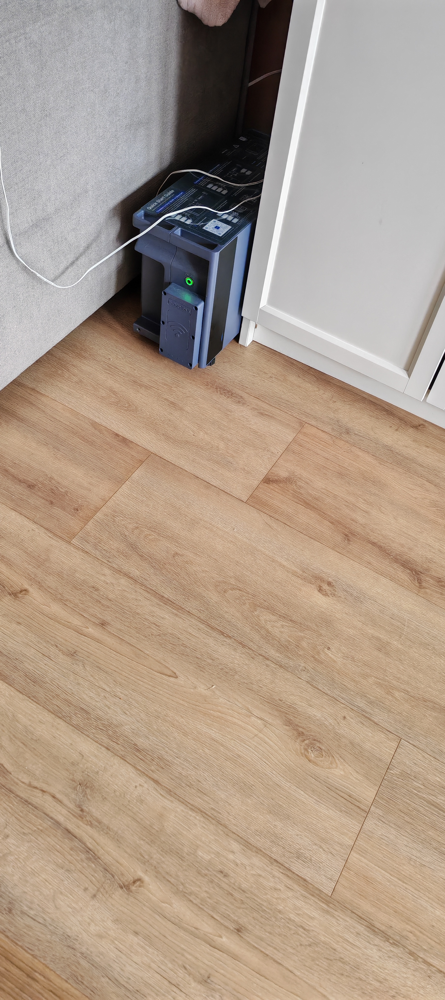
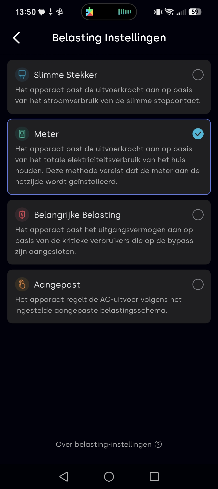
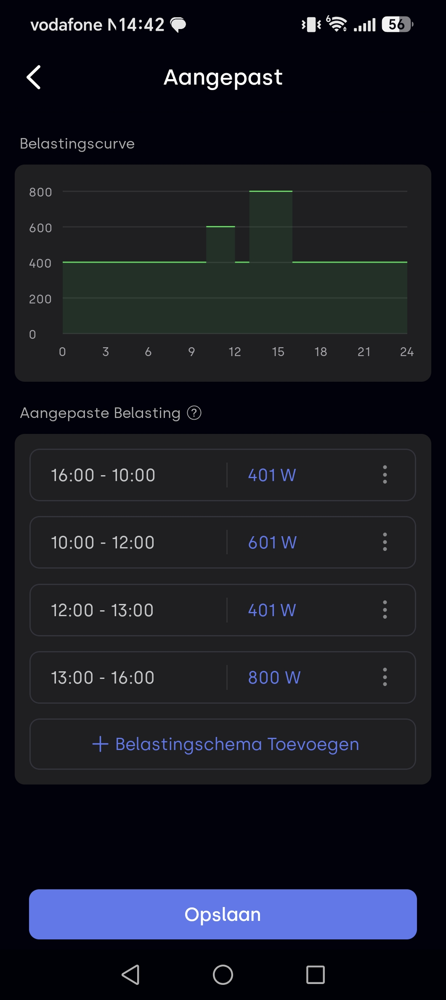
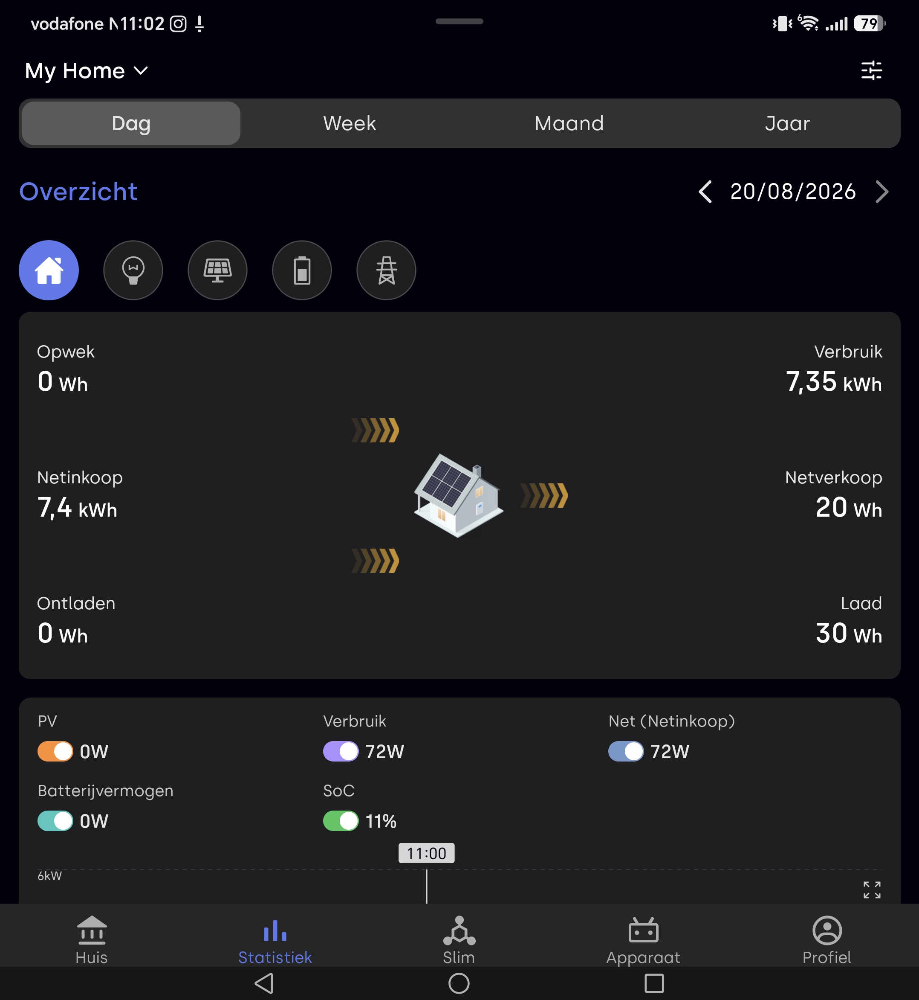
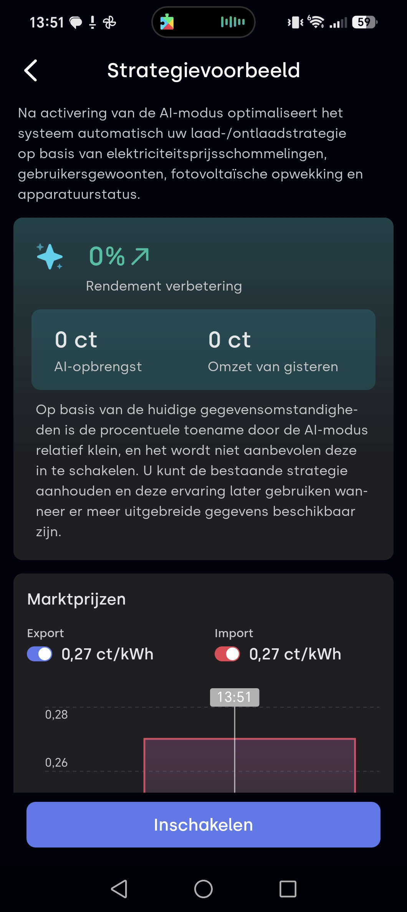
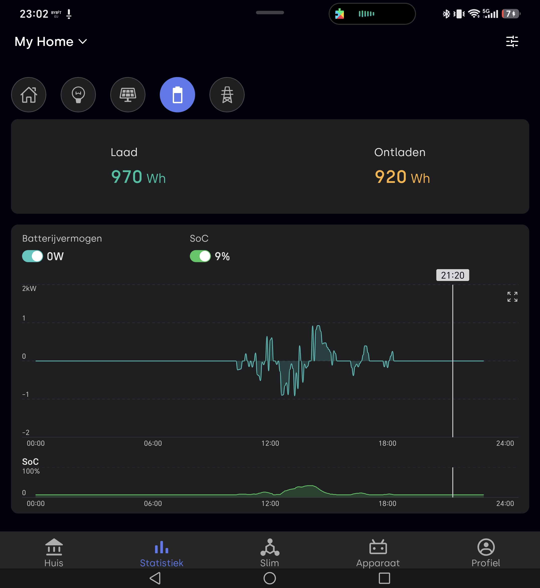
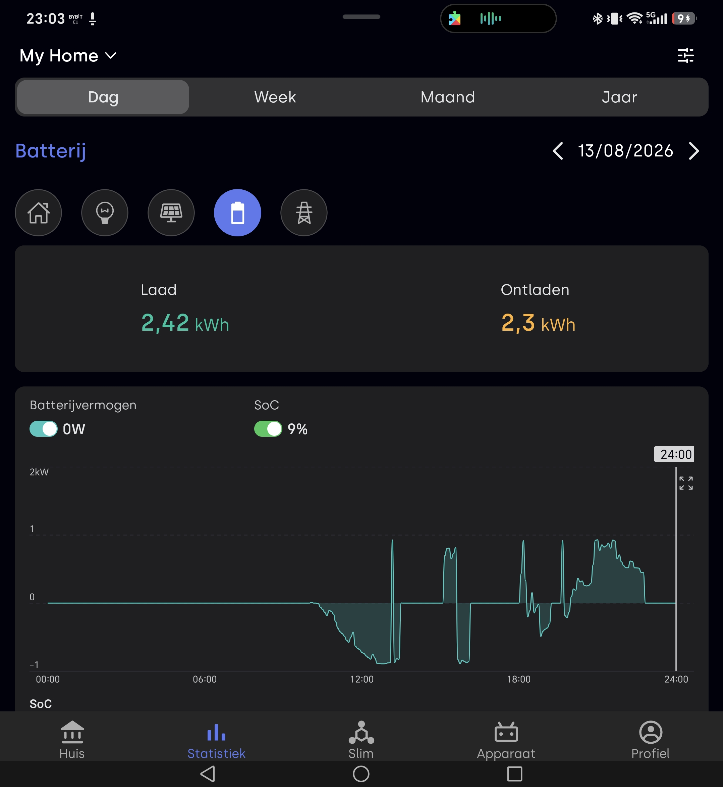
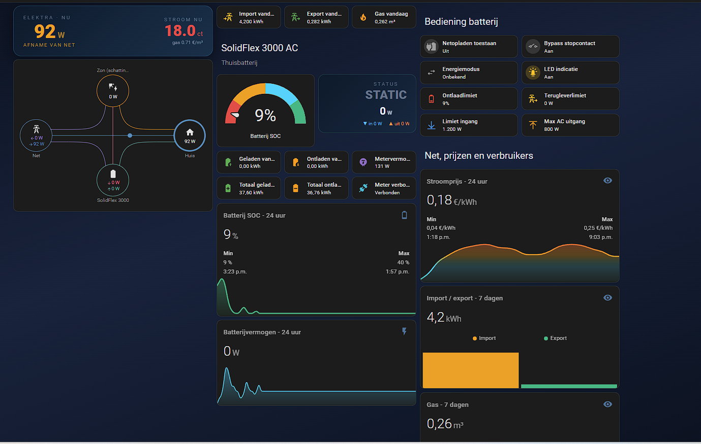
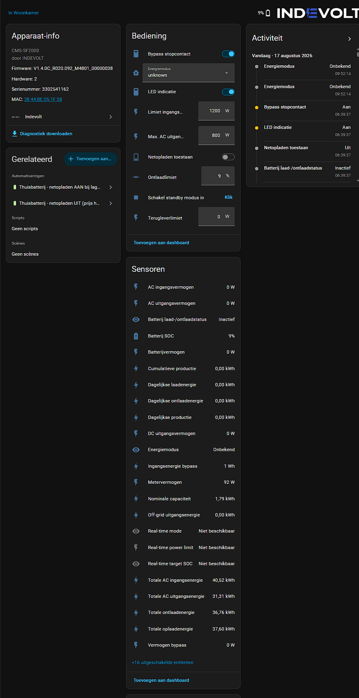

In deel 1 ging ik in op de unboxing en eerste indruk. Sindsdien heb ik de app veel dieper uitgeplozen, en daar kwam ik een fout uit deel 1 tegen die ik eerst wil rechtzetten.

Zo staat de SolidFlex 3000 AC bij mij, gewoon naast de kast. Geen aparte techniekruimte nodig.
Correctie op deel 1: geen 4 sturingsmodi, maar 2 losse schermen
In deel 1 sprak ik over "4 sturingsmodi". Dat klopt niet helemaal. Er zijn eigenlijk twee aparte schermen die makkelijk door elkaar lopen:
Energiemodus: bepaalt hóe het systeem laadt/ontlaadt
- Eigen verbruik: mijn huidige instelling
- Laad/ontlaad schema: vast schema
- Realtime-Regeling: handmatig per moment instellen
- Dynamische prijsmodus: voor dynamisch energiecontract
- AI-modus: voorspelt verbruik/opwek/prijs automatisch
Belasting Instellingen: bepaalt waaróp gestuurd wordt (dit zijn de "4 sturingsmodi" uit deel 1)
| Instelling | Wat het doet |
|---|---|
| Slimme Stekker | Batterij volgt alleen het verbruik van de aangesloten slimme stekker |
| Meter (mijn instelling) | Houdt je meter zo dicht mogelijk bij 0. Trek je stroom van het net, dan vult de batterij dat aan. Heb je overschot, dan slaat de batterij dat op |
| Belangrijke Belasting | Levert alleen stroom aan kritieke apparaten via de bypass-poort |
| Aangepast | Eigen schema met tot 48 tijdblokken |

Wanneer gebruik je "Belangrijke Belasting"?
Deze modus is niet bedoeld om je hele huis te optimaliseren, zoals "Meter" dat doet. Volgens Indevolt is hij vooral bedoeld voor noodsituaties, wanneer het systeem off-grid draait: de uitgang levert dan bij voorkeur stroom aan de off-grid/backup-aansluiting, voor de apparaten die je echt niet zonder stroom wil laten zitten. Denk aan een vriezer die niet mag ontdooien, medische apparatuur, of je internetrouter.
Wanneer gebruik je "Aangepast"?
Bij "Aangepast" schrijf je zelf een vast schema voor, tot 48 tijdblokken, elk met een eigen vermogen in watt. Geen sensor, geen automatiek, gewoon: tussen deze tijden, dit vermogen.


Terug op "Meter": binnen het uur laadde de batterij weer mee met een klein overschot.
Wat betekenen "Last" en "Opwek" nou echt?
Last is geen directe meting, maar een berekende waarde: je huishoudelijk verbruik plus het efficiëntieverlies van de apparatuur zelf. De exacte rekenformule maakt Indevolt niet openbaar.
Opwek blijft op 0W zolang je zonnepanelen niet gekoppeld zijn. Logisch, want de SolidFlex 3000 AC is een AC-gekoppeld systeem zonder eigen PV-ingang, en de P1-meter kan niet rechtstreeks als bron voor zonne-energie dienen. Indevolt gaf me hier vier officiële oplossingen voor:
- Twee slimme meters: één meet het Indevolt-systeem, de andere meet de opwek van je bestaande omvormer. Je selecteert de tweede dan in de app als PV-bron. Indevolt raadt hiervoor een Indevolt- of Solarman-meter aan.
- Compatibele omvormer: check de lijst met ondersteunde omvormers van derden. Staat jouw omvormer erbij, dan koppel je 'm rechtstreeks.
- Smart plug op de micro-omvormer: sluit de micro-omvormer aan op een smart plug en stel die in als PV-bron.
- CT-klem bij een driefasige meter: één van de stroomtransformatoren kan als signaalbron voor de zonneproductie dienen.
BatteryFlex: batterijen mixen en uitbreiden
Een van Indevolt's grootste verkoopargumenten: met het BatteryFlex-systeem kun je uitbreidingsmodules van verschillende leeftijd en capaciteit vrij combineren. Elke module wordt apart aangestuurd, en een defecte module wordt automatisch geïsoleerd. Geen enkel risico dat één oude batterij de rest afremt.
De 3.000W-unlock: kan het, en moet je het willen?
Standaard levert het apparaat 800W. Je kunt dit zelf in de app naar 3.000W unlocken. Indevolt is hier duidelijk over: boven de 800W raden ze altijd aan een elektricien in te schakelen, om overbelasting van je huisbedrading te voorkomen. Ik ga in dit artikel niet in op de bedrading zelf.
AI-modus: mooi idee, nog veel ruimte voor verbetering

Communicatiestabiliteit
Wat me positief verrast heeft: dit apparaat is niet afhankelijk van maar één manier om met je meterkast te praten. De SolidFlex 3000 AC biedt gewoon een flinke keuze:
- Wifi: dual-band, 2,4 en 5 GHz
- Bluetooth: voor lokale bediening zonder internet
- LAN/RJ45: bekabelde verbinding voor wie liever geen wifi gebruikt
- LoRa: ook aanwezig op de P1-meterlezer zelf, bedoeld voor stabiele verbinding over afstand en door muren heen. Let op: dit werkt alleen met de nieuwere generatie P1-meterlezer, de eerste generatie (zoals veel gebruikers al hebben) ondersteunt dit niet.
- RS485/Modbus: voor wie dat protocol al gebruikt
- Open lokale API: met officiële Home Assistant-ondersteuning
Het enige echte minpunt: je zonneopwek blijft onzichtbaar
Als ik één ding zou willen veranderen, is het dit: ook met een gekoppelde P1-meter die gewoon ziet wat mijn zonnepanelen opwekken, blijft het "Opwek"-veld in de Indevolt-app op 0W staan. De data is er dus, maar de app laat 'm hier simpelweg niet zien omdat de SolidFlex 3000 AC geen eigen PV-ingang heeft. Voor de rest van de app maakt dat weinig uit, maar als je nou juist benieuwd bent hoeveel je panelen opwekken, moet je daarvoor naar een ander scherm. Dit is het punt waarop de app nog een slag kan maken.
Praktijkervaringen buiten de app
Stroomuitval: tijdens het testen viel er écht een keer stroom uit. Met wifi en mobiele data uit kon ik het apparaat alsnog snel herkoppelen via Bluetooth en een QR-code. Dat werkte meteen goed.
Bewolkt vs. zonnig: het verschil in de statistieken
Twee dagen naast elkaar gezet in de app-statistieken:
| Dag | Laad | Ontladen |
|---|---|---|
| Bewolkt (16 aug) | 970 Wh | 920 Wh |
| Zonnig (13 aug) | 2.420 Wh | 2.300 Wh |
Op de zonnige dag laadde en ontlaadde de batterij ruim tweeënhalf keer zoveel als op de bewolkte dag. Precies wat je zou verwachten, maar fijn om het ook echt in de eigen cijfers terug te zien.

Bewolkt, 16 aug

Zonnig, 13 aug
Koppelen aan Home Assistant: makkelijker dan verwacht
Ik had me erop ingesteld dat het koppelen van mijn Indevolt-thuisbatterij aan Home Assistant een avond klussen zou worden. Dat viel enorm mee. Het enige wat je vooraf moet doen is in de Indevolt-app de lokale HTTP-toegang aanzetten. Zonder dat vindt Home Assistant je batterij niet. Daarna geef je het vaste IP-adres van de batterij op en is de koppeling in een paar klikken klaar. Belangrijk detail: het loopt volledig lokaal, dus niet via een cloudserver van de fabrikant. Dat betekent dat je data binnen je eigen netwerk blijft én dat je uitlezing blijft werken als het internet er even uit ligt. Binnen een minuut stonden er zo'n 58 entiteiten klaar in Home Assistant.
En dat is meteen het leuke: je krijgt niet één sensortje, maar echt alles. Laadtoestand (SOC), vermogen in en uit, aantal laadcycli, temperatuur, foutstatus en de instelbare modi staan er allemaal tussen. Zelf gebruik ik dat voor een eigen dashboardtab met een SOC-grafiek over 48 uur en een Solar Flow-kaart die live laat zien waar de stroom naartoe gaat.
Eén ding waar ik zelf tegenaan liep: mijn P1-meter meet het netto verbruik, niet de bruto zonneopbrengst. Zonder aparte PV-meter kun je zelfverbruikte zonnestroom wiskundig niet loskoppelen. Verder kun je met de batterij-entiteiten automatiseringen maken: een melding als de SOC onder de 20% zakt, of laden plannen op het goedkoopste uur van je dynamische contract.
Kortom: de koppeling zelf kostte me nog geen tien minuten. Het leuke werk, dashboards en automatiseringen, is waar je daarna de avonden in stopt.


Wat we nog niet zeker weten
Veelgestelde vragen
Waarom bestaan er in de app "sturingsmodi", "energiemodus" en "belasting instellingen" door elkaar?
Dat zijn eigenlijk twee losse schermen die makkelijk worden verward. Energiemodus bepaalt hóe het systeem laadt en ontlaadt. Belasting Instellingen bepaalt waaróp de batterij stuurt.
Wat betekent de "Last"-waarde in de app?
Een berekende waarde: je huishoudelijk verbruik plus het efficiëntieverlies van de apparatuur zelf. Geen exacte formule bekend.
Doet de AI-modus daadwerkelijk iets?
In mijn eigen testomgeving liet AI-modus nog geen laad- of ontlaadactiviteit zien. Volgens Indevolt heeft de modus voldoende historische gegevens nodig om nauwkeurige strategieën te genereren, en werken ze aan verdere optimalisatie.
Nog niet begonnen bij deel 1?
Unboxing, specificaties en de eerste installatie-ervaring lees je in deel 1 van deze review.
Lees deel 1 →